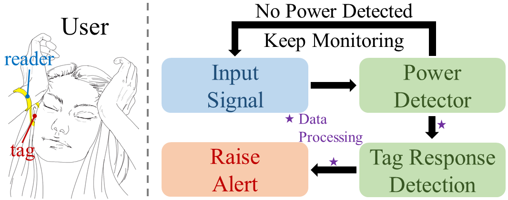

Project NoFaceContact: Stop Touching Your Face with NFC
|

|
COVID-19, emerging in late 2019, has infected millions of people worldwide and significantly impacted daily life. Apart from respiratory droplet spreading, COVID-19 is also known to propagate when individuals touch a contaminated surface and then their own face. In this work, we propose a system design, NoFaceContact, which leverages Near-field Communication (NFC) technology to promptly warn users not to touch their face in hope to stifle the propagation of COVID-19 and possibly other viruses and bacteria that spread in a similar way. |
Video
Citation
- Poster - NoFaceContact: Stop Touching Your Face with NFC, Junbo Zhang and Swarun Kumar, MobiSys 2020